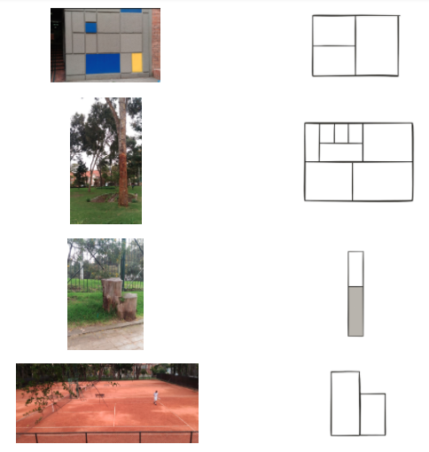

3 Augmented Visualizations
Augmented visualizations are the result of taking real objects or places in physical space and turning them into data visualizations without any type of intervention.
Augmented visualizations bring together data, augmented reality and visualizations in a wysiwyg (what you see is what you get) process.
To start with off, let us train our eye to see different visualization types in public space.
Please match the picture on the left with the corresponding pseudoviz:

Although there might be may visualizations that are already there, the real challenge comes when one needs to make them explicit for passerbys to notice and get the message we want to convey.
For this we need three things:
- Identify the place or space along with its corresponding pseudoviz
- Create a data visualization for the selected space and pseudoviz.
- Properly label the embedded visualization.
In the next section we will how we can do that.
3.1 How to create augmented visualizations
3.1.1 Finding a physical Pseudoviz
Finding a place or an object with a visualization already made if the first step to create augmented visualizations.
We suggest you get acquainted with all types of data visualizations that can be made. There are already a couple of resources on the internet for you to explore possible visualizations, here are a couple options for you:
- Pseudoviz (recommended by us)
- Viz catalogue
- blocks
- …
- …
Here are some clues for you to look for:
- Contiguous objects of the same type and different size
- Irregular Grids in walls
3.1.2 Creating a data visualization
With the place and pseudo viz picked, all you have to do is find the visualization that represents the physical place.
It might be tricky to find the right data. We advice you to look for open data portals that have a lot of different information.
Here are some clues:
- The most common visualization types that can be found in public space relate to proportions. Look for data that can be expressed as counts of categories or proportions.
3.1.3 Labeling the embedded visualization
One option would be to use chalk or a blank paper sticker to write the labels and values of the visualization.
Eye comparisons of sizes and proportions in a public space are highly influenced by view angles and depth. Creating a label from the right perspective will definitely help convey the message with the visualizations. That’s why we recommend creating a custom legend for your visualization.
You can take a picture of the place, overlay the visualization with any photoediting software and print it to place it as legend.
3.1.4 _____ in Bogotá between 2010 and 2015

Bogotá Stream Graph